TSE LONG TIN
謝朗天 | Hong Kong U15 Representative
CENTRE BACK / DEFENSIVE MIDFIELDER
Kitchee Sports Club U16 | Hong Kong, China
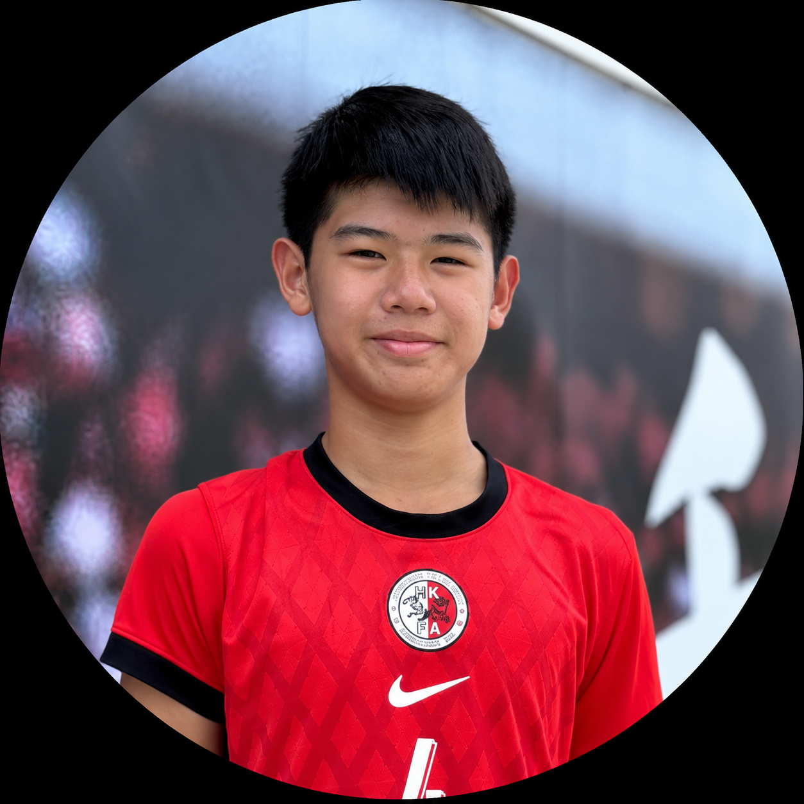
PLAYER INTRODUCTION
Player Overview
Tse Long Tin is a 14-year-old Hong Kong U15 representative and a regular starter for Kitchee Sports Club U16, primarily playing as a centre back and also as a defensive midfielder.
Already competing above his age group, Long Tin recorded 14 appearances for Kitchee U16 during the 2025–26 season, alongside 20 appearances at U14 level. He previously served as vice-captain of Kitchee U14 and was selected for the Hong Kong Football Association (HKFA) Talent Identification Programme.
In September 2026, Long Tin was recruited to Diocesan Boys' School (DBS) in recognition of his achievements in competitive football and athletics. He is currently a starting XI player for the DBS school football team.
Standing 186 cm tall, with a recorded 100 m personal best of 11.80 seconds, Long Tin combines international youth representative experience, exposure to older age groups, leadership experience, and an athletic background as he continues his football development.
Football Highlights
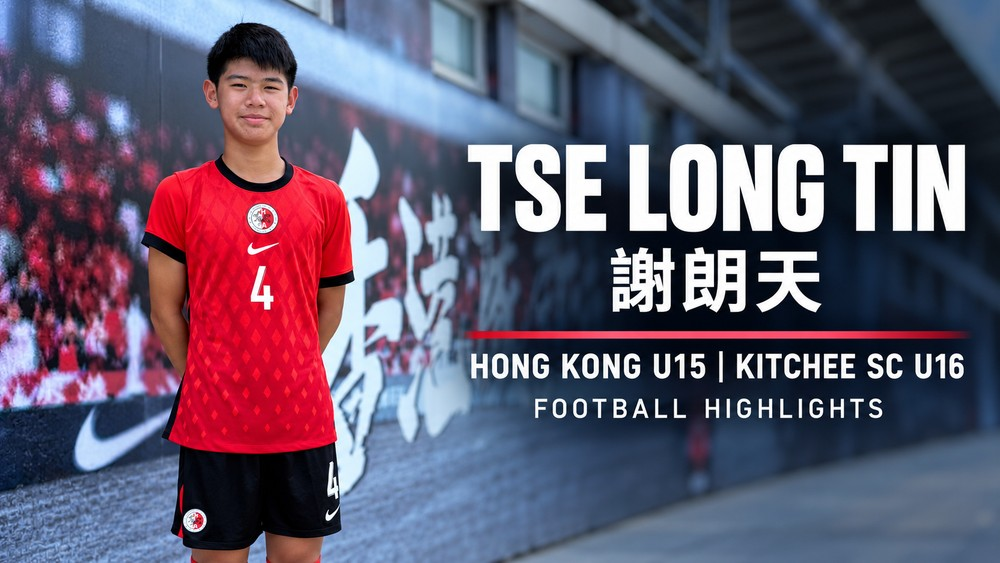
Watch 2-minute match highlightsTSE LONG TIN | MATCH HIGHLIGHTS (2 MINUTES)
Selected match footage featuring defensive actions, distribution from deeper positions, ball progression, and aerial challenges.
The footage is provided as a reference for reviewing his football abilities and playing characteristics.
Player Information
| Detail | Information |
|---|---|
| Full Name | Tse Long Tin (謝朗天) |
| Date of Birth | 21 September 2012 |
| Age | 14 |
| Nationality | Hong Kong, China |
| Youth Representative Team | Hong Kong, China U15 |
| Current Club | Kitchee Sports Club U16 |
| School Team | Diocesan Boys' School |
| Positions | Centre Back / Defensive Midfielder |
| Preferred Foot | Right |
| Height | 186 cm |
| Weight | 72 kg |
| 100 m Personal Best | 11.80 seconds |
| 200 m Personal Best | 24.00 seconds |
| Languages | Cantonese / English |
Current Football Profile
As of October 2026
- Hong Kong, China U15 Representative Team
- Regular Starter
- Kitchee Sports Club U16
- Regular Starter — Competing Above His Age Group
- Diocesan Boys' School Football Team
- Starting XI Player — Joined September 2026
- Primary Position:
- Centre Back
- Secondary Position:
- Defensive Midfielder
Development Background
- Competing above his age group at Kitchee Sports Club U16.
- Former vice-captain of Kitchee Sports Club U14.
- Selected for the HKFA Talent Identification Programme (2012 age group).
- Recruited by Diocesan Boys' School in recognition of his football and athletics achievements.
FOOTBALL RECORD & ACHIEVEMENTS
Information current to October 2026
Representative Experience
2026–27
Hong Kong, China U15 Representative Team
Regular squad member and starter.
August 2026 — Phoenix Cup, International Youth Football Elite Tournament
- Location: Chengdu, China
- Team Result: Runner-up
2025–26
Hong Kong, China U16 Futsal Team
Selected for the representative team.
Hong Kong, China U14 Representative Team
September 2025 — Guangdong–Hong Kong–Macau Youth Football Exchange Programme
- Two matches played
- Team Result: Runner-up
2023–24
Hong Kong, China U14 Futsal Team
Selected for the representative team.
Club Honours
| Season | Competition | Team Result |
|---|---|---|
| 2025–26 | Hong Kong Premier Youth League U16 Championship Group | Champion |
| 2025–26 | Hong Kong Premier Youth League U14 FA Cup | Champion |
| 2024–25 | Hong Kong Premier Youth League U14 FA Cup | Champion |
| 2024–25 | Hong Kong Premier Youth League U14 Championship Group | Runner-up |
Club Match Record (As of October 2026)
| Season | Team | Appearances | Goals |
|---|---|---|---|
| 2026–27 (Ongoing) | Kitchee SC U16 | 3 | — |
| 2025–26 | Kitchee SC U16 | 14 | 1 |
| 2025–26 | Kitchee SC U14 | 20 | 1 |
Appearance and goal statistics are based on player-provided records. Competition coverage is subject to confirmation against official club records. The 2026–27 season is ongoing; a dash indicates that the figure has not been provided.
School Football & Sports Recruitment
Current School: Diocesan Boys' School (since September 2026)
Previous School: La Salle College
Long Tin was recruited to Diocesan Boys' School (DBS) in September 2026 in recognition of his achievements in competitive football and athletics. He is currently a starting XI player for the DBS school football team.
DBS has a distinguished football tradition, having won the All Hong Kong Schools Jing Ying Football Tournament for three consecutive years (2024–2026).
Inter-School Football Record
| Season | School / Competition | Status / Result |
|---|---|---|
| 2026–27 | Diocesan Boys' School | Starting XI — Season ongoing |
| 2025–26 | La Salle College — HKSSF Division One, Boys C Grade | Third Place |
| 2024–25 | La Salle College — HKSSF Division One, Boys C Grade | Runner-up |
DBS's previous championships predate Long Tin's enrolment. His current DBS participation is listed separately from his earlier school football achievements at La Salle College.
Athletic Performance
HKSSF Inter-School Athletics Competition — Division One
| Season | Event | Result |
|---|---|---|
| 2025–26 | 200 m — 24.00 seconds | 3rd Place |
| 2025–26 | 100 m — 11.80 seconds | 5th Place |
| 2025–26 | 4 × 100 m Relay | 4th Place |
| 2024–25 | 4 × 100 m Relay | 1st Place |
| 2024–25 | Overall Individual Championship | 1st Overall |
Typical Training Exposure
Hong Kong Representative Team
Approximately 4–6 call-ups per year, with each training or competition period generally lasting 3–7 days.
Kitchee Sports Club
Approximately four training sessions per week.
School Football
Approximately two training sessions per week.
MATCH ACTION
Match Action Highlights
CENTRE BACK / DEFENSIVE MIDFIELDER
Selected match photographs illustrating Long Tin's involvement in different phases of play.

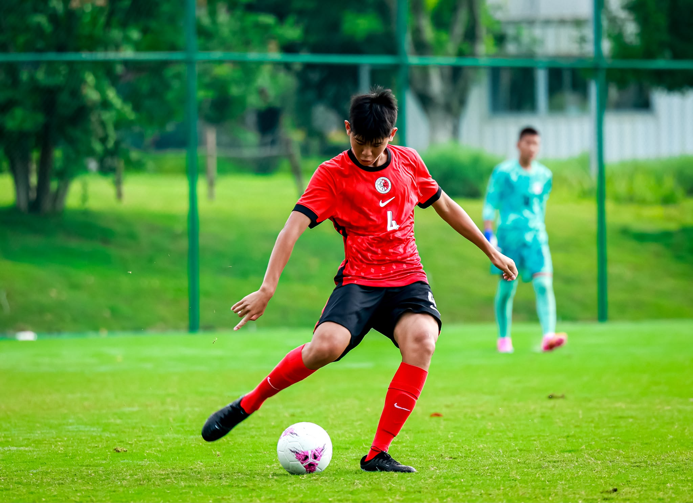
Defensive Build-Up & Distribution
Distribution from a deeper position during match play.

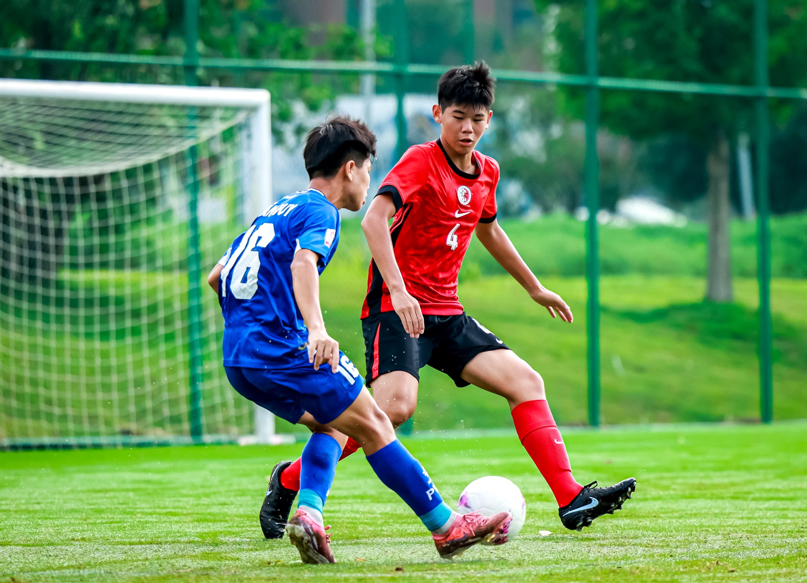
One-on-One Defending
Individual defensive action against an opposing player.

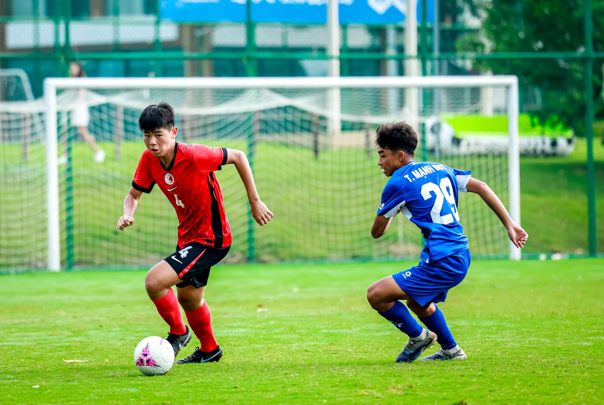
Ball Progression Under Pressure
Advancing possession while facing opposition pressure.

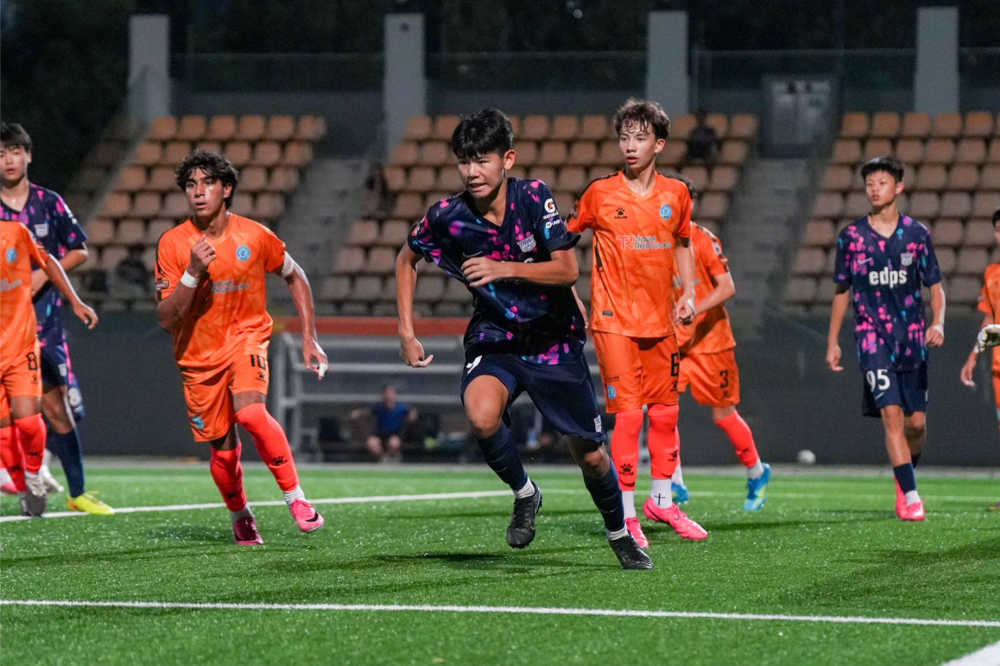
Club Match Experience
Competitive match action with Kitchee Sports Club.

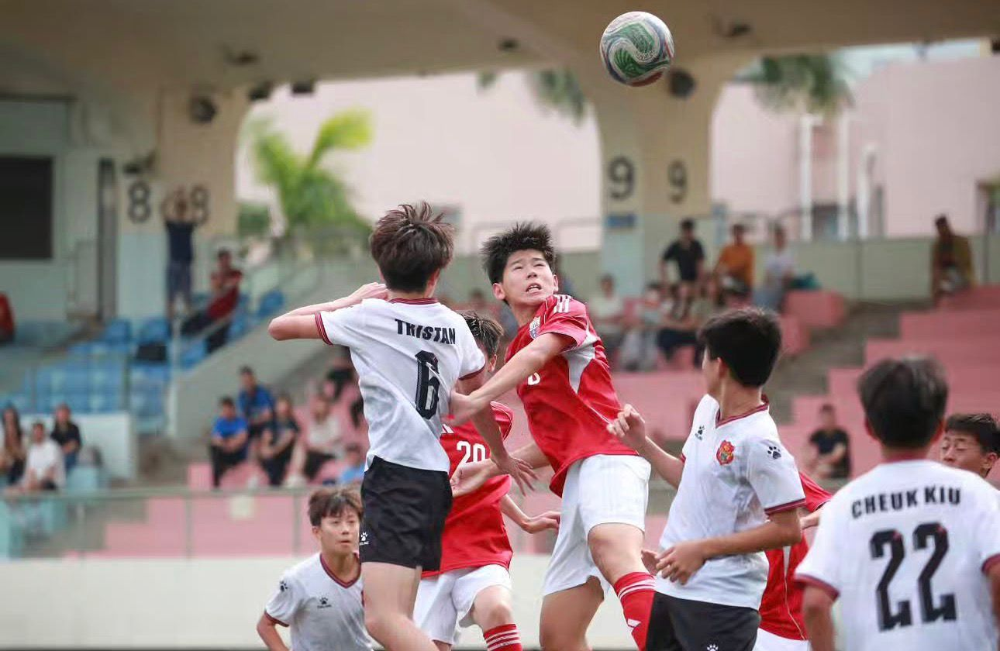
Aerial Challenges
Contesting aerial balls during match situations.
Football Highlights Video
Selected Match Highlights (2 Minutes)
Match footage providing additional context on his defensive involvement, passing, ball progression, and aerial actions.
REPRESENTATIVE & DEVELOPMENT JOURNEY
Football & Athletic Development
HONG KONG REPRESENTATIVE | CLUB | SCHOOL | ATHLETICS
A selection of photographs documenting Long Tin's experience across youth international football, club competitions, school football, and athletics.

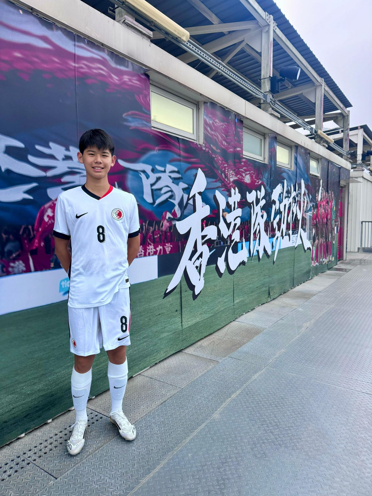
Hong Kong Representative Football
Participation in Hong Kong youth representative team activities.

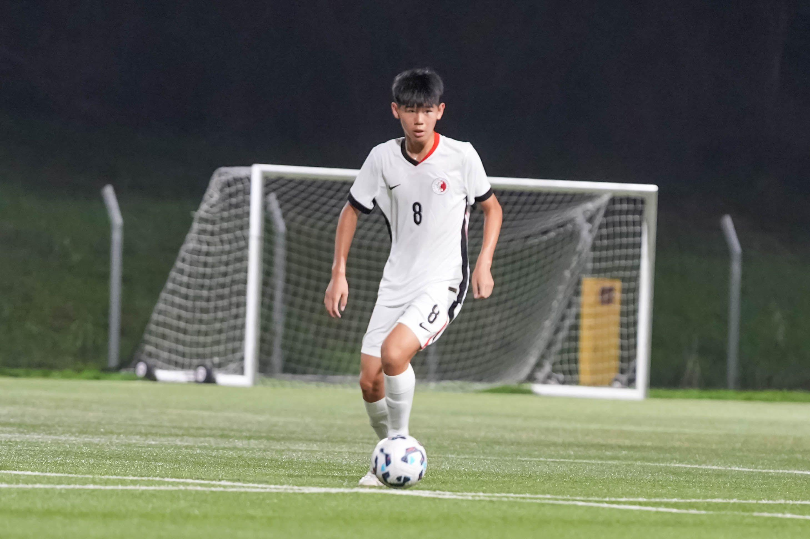
International Youth Match Experience
Match action during youth representative competitions.

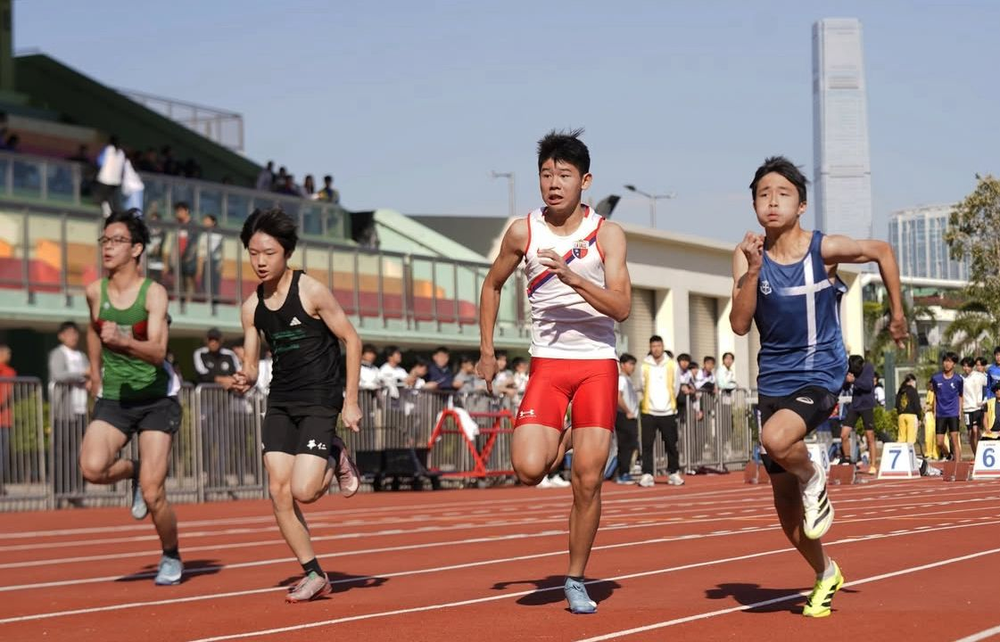
Athletic Performance
Participation in inter-school athletics competitions.

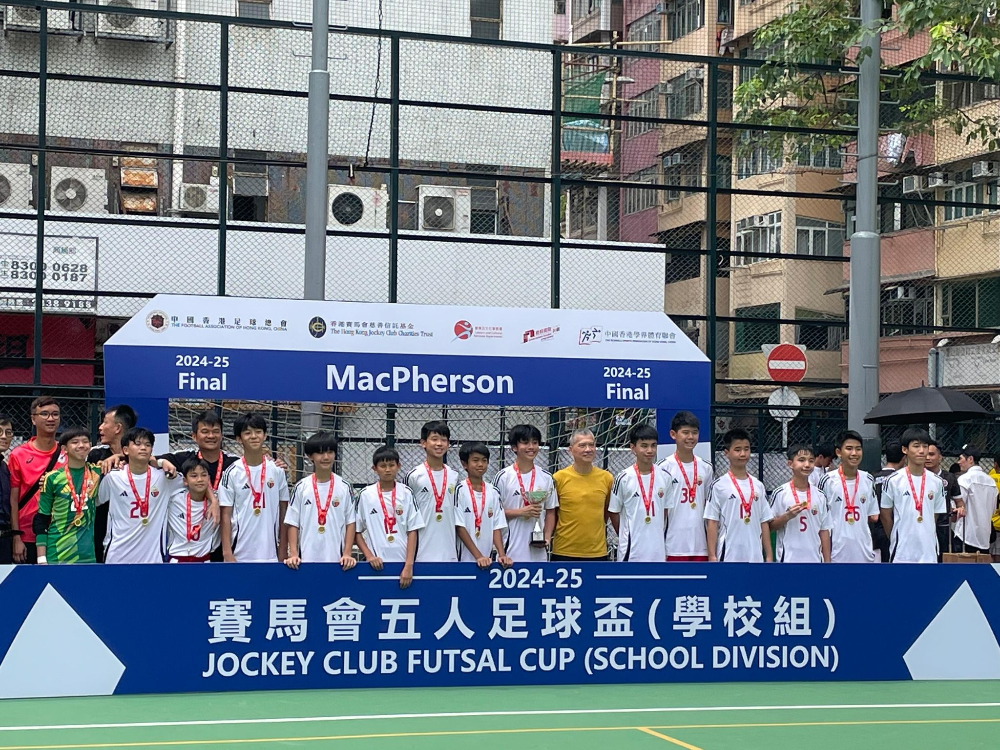
Inter-School Football
School football involvement and competition experience.

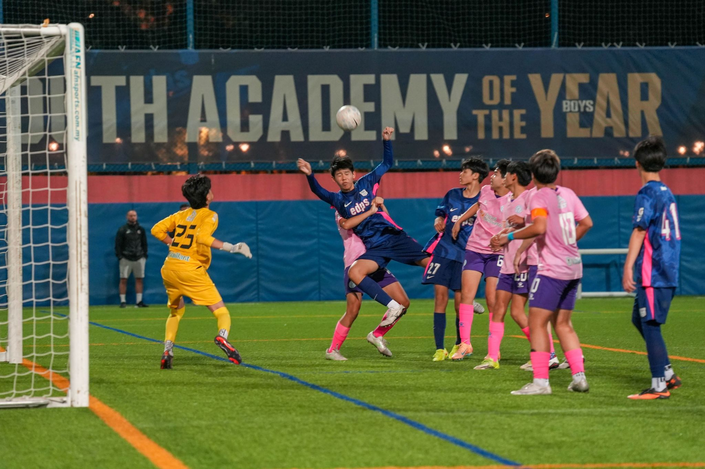
Set-Piece & Aerial Action
Aerial involvement during competitive match situations.

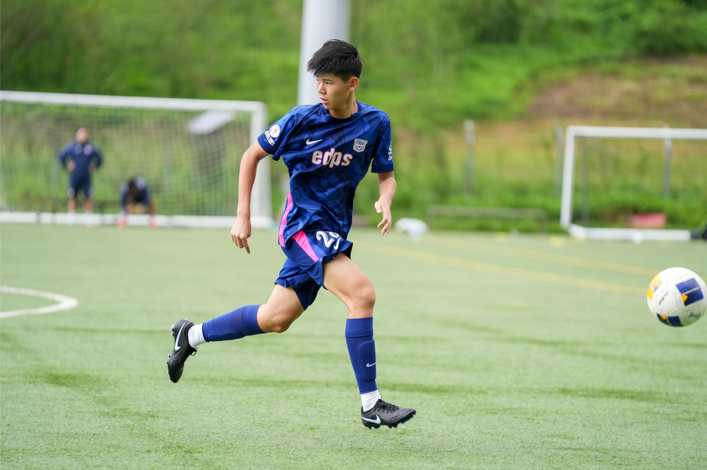
Club Development Environment
Football development and competition experience with Kitchee Sports Club.
TSE LONG TIN (謝朗天)
Hong Kong U15 Representative | Kitchee Sports Club U16
Centre Back / Defensive Midfielder